SATP Hermes Plugin - Architecture Documentation¶
Overview¶
The SATP Hermes Plugin implements the IETF Secure Asset Transfer Protocol (SATP) for cross-chain asset transfers between distributed ledgers. This documentation provides comprehensive API references and architectural insights.
📊 Architecture Diagrams¶
Complete System Architecture¶
The diagram above shows the complete SATP Hermes architecture including:
- Entry Points (Green): Three ways to use SATP Hermes
- Gateway CLI for production deployment
- SATP Gateway Plugin for programmatic usage
-
BLO API Dispatcher for REST API access
-
Core Services (Blue): Internal orchestration
- Gateway Orchestrator manages counterparty connections
-
SATP Manager coordinates protocol execution
-
Cross-Chain Layer (Orange): Blockchain interactions
- Cross-Chain Manager coordinates operations
- Bridge Manager handles asset lock/unlock
-
Oracle Manager monitors events
-
Data Layer (Purple): Persistence and logging
- Gateway Persistence provides unified logging
-
Local/Remote repositories for audit trails
-
Protocol Stages (Teal): SATP implementation
- Stage 0: Transfer Initiation
- Stage 1: Lock Assertion
- Stage 2: Commitment Establishment
- Stage 3: Transfer Completion
- Crash Recovery for failure handling
Entry Point Initialization¶
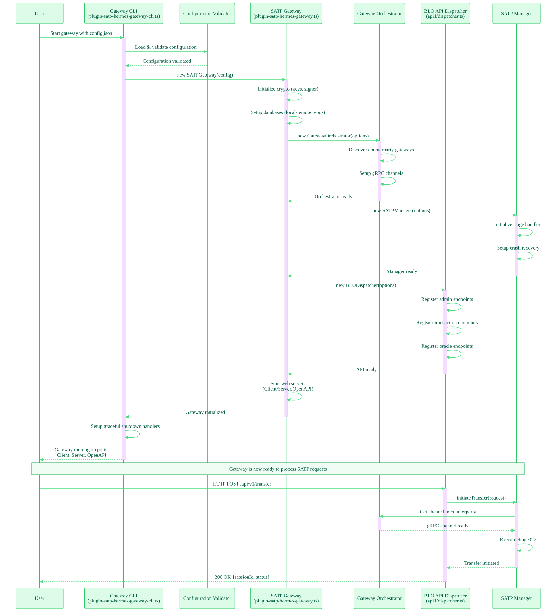
This sequence diagram illustrates the complete initialization process when launching a gateway through the CLI:
- CLI loads and validates configuration
- Gateway instance is created with crypto setup
- Orchestrator is initialized for counterparty management
- SATP Manager is created for protocol coordination
- API endpoints are registered
- HTTP servers are started
Use Case Scenarios¶
Three deployment models leverage the same core:
- Production Deployment: Use Gateway CLI with Docker containers
- Programmatic Integration: Import Gateway Plugin as a library
- REST API Access: Access via BLO API Dispatcher endpoints
📦 Module-Level Architecture¶
Core Module¶
The Core Module implements the SATP protocol state machine:
- Constants & Configuration: Protocol defaults, stage definitions, error codes
- Logger & Session Utils: Structured logging and session management
- Stage Handlers (0-3): Individual stage implementations with message routing
- Client/Server Services: Protocol message exchange over gRPC/Connect RPC
- Crash Manager: Recovery coordinator with rollback strategies
- Error Types: Typed exceptions for protocol violations
API Module¶
The API Module provides REST endpoints for external access:
- BLO API Dispatcher: Central routing for HTTP requests
- Admin Endpoints: Gateway configuration and status (
/info,/health) - Transaction Management: Asset transfer initiation and monitoring (
/transfer,/sessions) - Oracle Operations: Bridge event queries and proof retrieval (
/oracle/task)
Cross-Chain Module¶
The Cross-Chain Module handles blockchain interactions:
- Cross-Chain Manager: Coordinates bridge and oracle operations
- Bridge Core: Asset lock/unlock abstraction layer
- Fabric/EVM/Besu Bridges: Blockchain-specific implementations
- Oracle Core: Event monitoring and proof generation
- Smart Contracts: On-chain lock/unlock logic
- Ontology: Asset definition resolution
Database Module¶
The Database Module manages persistence:
- Gateway Persistence: Unified logging interface
- Local Repository: SQLite/PostgreSQL for sessions and logs
- Remote Repository: IPFS for immutable proof storage
- Knex Configuration: Query builder and migration management
- Migrations & Seeds: Schema versioning and test data
Services Module¶
The Services Module provides gateway orchestration:
- Gateway Orchestrator: Counterparty connection management
- SATP Manager: Protocol coordination across stages
- Metrics Collector: Performance and protocol metrics
- Alert Manager: Error notification and recovery triggers
- Network Resolver: Gateway discovery and DNS resolution
- Validators: Configuration and message validation
Factory Module¶
The Factory Module handles component creation:
- Plugin Factory: Dependency injection and lifecycle management
- Configuration: Gateway parameters and crypto keys
- Component Creation: Instantiates Orchestrator, Manager, Repositories
� API Layer Architecture¶
API1 - BLO REST Endpoints¶
The API1 Module provides RESTful HTTP endpoints for external access:
Admin Endpoints¶
- GET /healthcheck - Gateway health status and dependency checks
- GET /status - Gateway configuration and network information
- GET /integrations - Available blockchain connectors and bridges
- GET /audit - Session logs and transaction history
- POST /add-gateway - Register counterparty gateways
- GET /sessions - Active session tracking and metadata
Transaction Endpoints¶
- POST /transact - Initiate asset transfer with SATP protocol
- GET /approve-address - Validate addresses and asset verification
Oracle Endpoints¶
- POST /oracle/register - Setup event monitoring with filters
- POST /oracle/execute - Manual task trigger and proof generation
- DELETE /oracle/unregister - Stop monitoring and cleanup
- GET /oracle/status - Task status and processing metrics
API3 - SATP Protocol gRPC/ConnectRPC¶
The API3 Module implements gateway-to-gateway SATP protocol communication:
Client Services (Outbound Requests)¶
- Stage 0: Transfer proposal and negotiation
- Stage 1: Lock assertion and claim generation
- Stage 2: Commitment preparation and readiness
- Stage 3: Completion assertion and acknowledgment
Server Services (Inbound Handlers)¶
- Stage 0: Receive proposals and validate requests
- Stage 1: Verify lock proofs and generate receipts
- Stage 2: Process commitments and state transitions
- Stage 3: Verify completion and finalize sessions
Crash Recovery Protocol¶
- Recovery Client: State restoration and rollback initiation
- Recovery Server: Recovery coordination and rollback execution
�🎯 Entry Points¶
1. Gateway CLI (plugin-satp-hermes-gateway-cli.ts)¶
Purpose: Command-line launcher for production SATP gateway deployments
Usage:
Features: - Configuration validation with detailed error reporting - Containerized deployment support - Graceful startup/shutdown handling - Production logging integration
2. SATP Gateway Plugin (plugin-satp-hermes-gateway.ts)¶
Purpose: Core plugin for programmatic SATP gateway integration
Usage:
import { SATPGateway } from '@hyperledger/cactus-plugin-satp-hermes';
const gateway = new SATPGateway({
instanceId: 'gateway-001',
keyPair: keyPairConfig,
localRepository: localRepo,
remoteRepository: remoteRepo,
// ... additional configuration
});
await gateway.onPluginInit();
Features: - Full TypeScript/JavaScript API - Embedded gateway capability - Flexible programmatic configuration - Event-driven architecture
3. BLO API Dispatcher (api1/dispatcher.ts)¶
Purpose: REST API layer for external SATP client access
Endpoints:
- POST /api/v1/transfer - Initiate asset transfer
- GET /api/v1/status - Gateway status
- GET /api/v1/sessions - Active SATP sessions
- POST /api/v1/oracle/task - Oracle operations
Usage:
curl -X POST http://gateway:3000/api/v1/transfer \
-H "Content-Type: application/json" \
-d '{"assetId": "...", "amount": 100, ...}'
Features: - RESTful HTTP endpoints - OpenAPI/Swagger specification - Request routing and error handling - Admin and transaction operations
🔗 Core Components¶
Gateway Orchestrator¶
Manages connections to counterparty gateways, handles channel lifecycle, and routes gRPC/Connect RPC messages.
Key Responsibilities: - Gateway discovery and resolution - Channel management - Message routing - Session coordination
SATP Manager¶
Coordinates SATP protocol execution across all four stages, manages session state, and handles crash recovery.
Key Responsibilities: - Protocol state machine - Stage handler coordination - Session lifecycle management - Crash recovery orchestration
Cross-Chain Manager¶
Coordinates blockchain interactions through bridge and oracle components.
Key Responsibilities: - Bridge operation coordination - Oracle event monitoring - Ontology resolution - Proof generation and verification
Gateway Persistence¶
Unified logging interface for SATP operations with dual repository support.
Key Responsibilities: - Transaction logging to local DB - Immutable proof storage to remote repository (IPFS) - Audit trail maintenance - Crash recovery data
📋 SATP Protocol Stages¶
The plugin implements the IETF SATP specification across four stages:
Stage 0: Transfer Initiation¶
Negotiates transfer parameters and establishes session between gateways.
Stage 1: Lock Assertion¶
Locks assets on source ledger and generates cryptographic proofs.
Stage 2: Commitment Establishment¶
Establishes commitment between gateways with signed receipts.
Stage 3: Transfer Completion¶
Unlocks assets on destination ledger and finalizes transfer.
Crash Recovery¶
Handles failure scenarios with rollback strategies for each stage.
🚀 Getting Started¶
Documentation Navigation¶
- Modules: Browse all TypeScript modules organized by functionality
- Classes: Explore class hierarchies and implementations
- Interfaces: Review contract definitions and types
- Functions: Find utility functions and helpers
Quick Links¶
Building Documentation¶
# Generate diagrams and documentation
yarn docs:generate
# Serve locally
yarn docs:serve
# Validate completeness
yarn docs:validate
📖 Additional Resources¶
For detailed implementation guides, configuration examples, and troubleshooting:
- Documentation README - Diagram generation, build instructions, and documentation maintenance
- Individual module documentation - Refer to API specifics for each component
- GitHub Examples - Use cases and sample implementations
Additional Documentation Files¶
All documentation files from the docs/ folder are available in the generated TypeDoc output:
- Browse to
/docs/in the documentation website to access all markdown files - Architecture diagrams are available at
/assets/diagrams/ - Supplementary materials are included in their respective subdirectories
Version: 0.0.3-beta
SATP Draft: core-02, architecture-02, crash-02
License: Apache-2.0